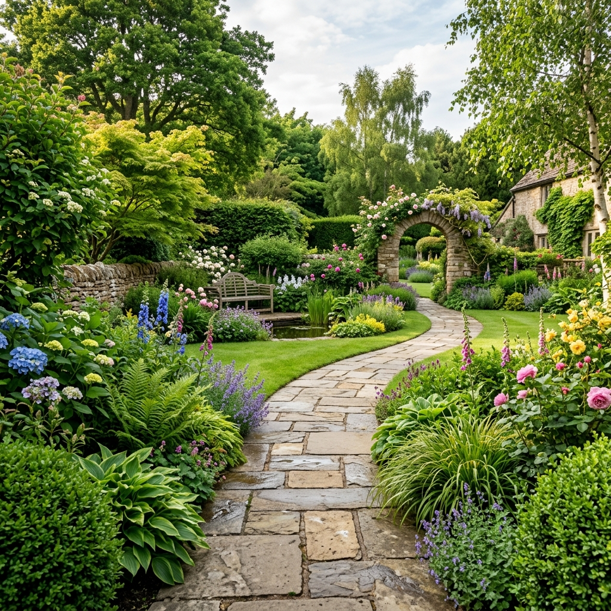

Garden Design & Sustainable Living
Welcome to Maria's Nature Garden
Sharing the beauty of nature through gardens, plants, and sustainable living.
Explore Nature
Garden Design & Sustainable Living
Sharing the beauty of nature through gardens, plants, and sustainable living.
Explore Nature
About Maria
Maria Santos is a garden designer and environmental advocate who has spent the last decade helping people fall back in love with the outdoors. From backyard vegetable beds to native pollinator gardens, she believes every green space — however small — can be a little healthier for the planet.
When she's not designing gardens, Maria writes about eco-friendly growing practices and hosts community workshops on composting, rainwater harvesting, and native planting.
Finds daily inspiration in forests, wildflowers, and quiet mountain trails.
Designs gardens that balance beauty, function, and low water use.
Champions eco-friendly practices in every project, big or small.
Believes native species are the backbone of a resilient garden.
Gallery
A few of the places and plants that inspire Maria's work.




Testimonials

"Maria redesigned our front yard with native plants and it's thriving with barely any watering. Beautiful work."

"Her workshop on composting completely changed how our community garden operates. Practical and easy to follow."

"We hired Maria for a small balcony garden and she made it feel like a forest hideaway. Highly recommend."
Get in Touch
Have a garden project in mind, or a question about native planting? Send a message and Maria will get back to you.